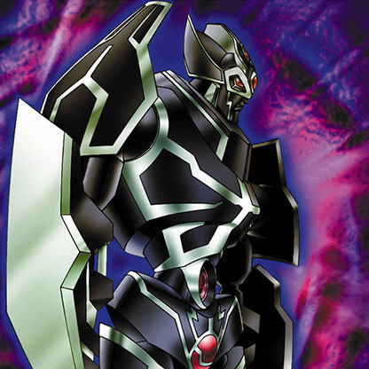
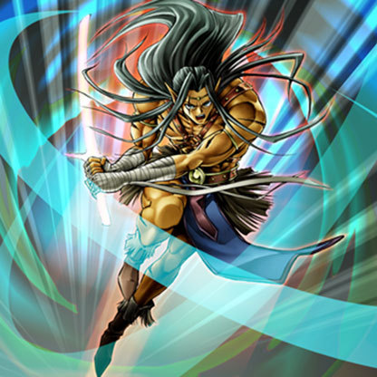
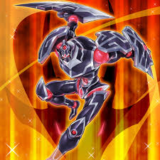
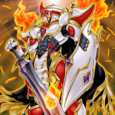
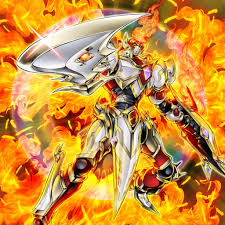

Yugioh Card Lore
Read about all the lore of certain yugioh cards that you may or may not have seen.
Gearfried
Gearfried
is a legendary warrior born with power so immense that merely holding a weapon
resulted in the widespread devastation of entire battlefields. Fearing his own destructive
might, he sealed himself in restrictive iron armor to intentionally restrain his strength.
The lore of Gearfried unfolds through a series of powerful transformations and rebirths as
he seeks to master and unleash his true potential:
Gearfried the Iron Knight:
He confines his power in heavy armor. To represent this restraint, his card effect destroys
any Equip Card attached to him. He refuses to hold a weapon.

Gearfried the Swordmaster:
By using the card Release Restraint, Gearfried sheds his heavy armor to unleash his full combat
prowess, devastating any opponent who faces him.

Gearfried the Red-Eyes Iron Knight:
Embracing the power of the Red-Eyes
dragons, he briefly served as a valiant knight alongside them.

Phoenix Gearfried / Immortal Phoenix Gearfried:
After suffering a defeat by a blade-destroying swordsman, Gearfried's spirit was noticed by a Sacred
Phoenix. Imbued with phoenix energy, he rose from the ashes as Phoenix Gearfried, capable of limitless
power. He later evolved into the ultimate Immortal Phoenix Gearfried after being blessed with the power
of the Egyptian God, The Winged Dragon of Ra.

